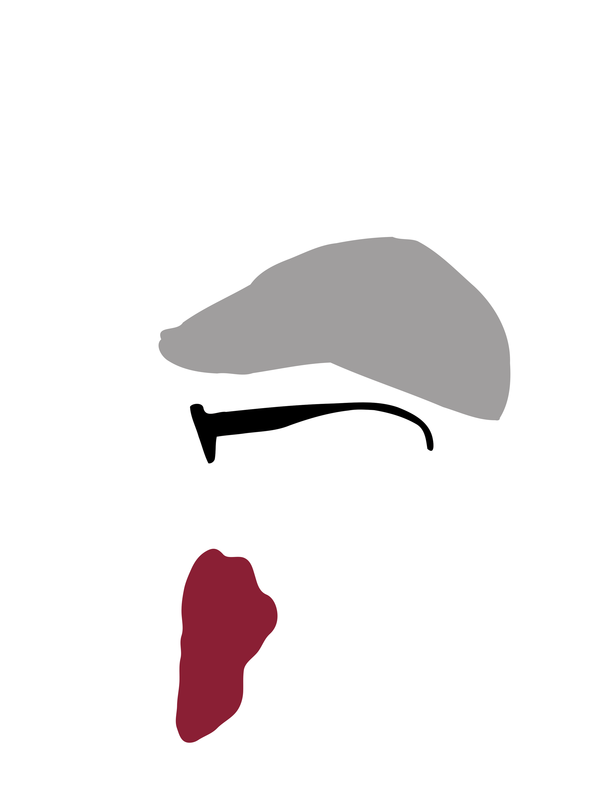
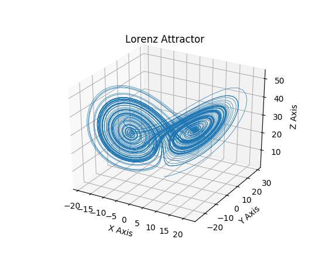

Programmieren
lernen
mit
RedBeardCode
1. Aller Anfang ist schwer.
WIRKLICH?
Python, die Schlage?
Wieso Python?
- Zum Lernen entwickelt

- Einfache Sprache
- Universell
- Desktop: Dropbox,
Automatisierung

- Web: Django, Flask
- Wissenschaft: numpy, jupyter, highperformance 
- Desktop: Dropbox,
Automatisierung
- Plattformunabhängig
- Ökosystem
- Kostenlos
Wieso gibt es Python 2 und 3
- Aufräumen von Fehlentscheidungen
- Python 2.7 ist die letzte Version
- Python 2 nur noch in Ausnahmefällen
Was bringt Python mit?
Battery
included
- Interpreter
- IDE
- Standard libs

Installation
- Komfortable Zusammenstellungconda https://www.continuum.io/downloads
-
PyCharm
https://www.jetbrains.com/pycharm/download/